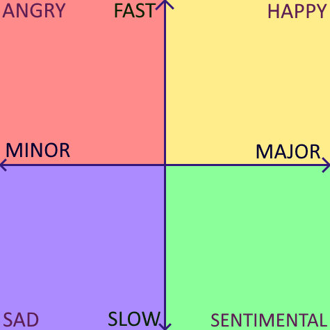

Scales and emotions
The simplistic version we're told is:
A song in a major scale is happy, a song in a minor scale is sad.
While there's some truth to that, there's also a lot more to it.
First, a more accurate claim would be:
- A fast song in a major scale is happy.
- A slow song in a major scale is sentimental.
- A slow song in a minor scale is sad.
- A fast song in a minor scale is angry.
That's pretty profound stuff!
Here's a depiction of those four quadrants:

Here's my source, an excellent guide!